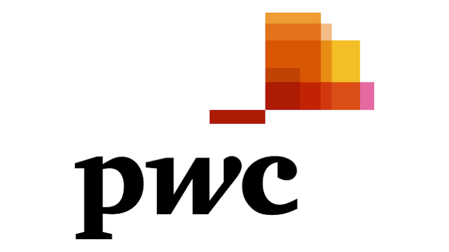

Education & Experience

University of Washington
Class of 2026
Master of Science in Business Analytics • Seattle, WA
- Graduated with a 3.96/4.0 GPA and inducted into the Beta Gamma Sigma Honor Society.
- Tutored statistics part time at the UW Teaching and Learning Center.
Sound Credit Union
2025 – 2026
Data Science Capstone • Applied Industry Project
- Built churn prediction model (85% recall), projecting 15–20% churn reduction.
- Designed AI-powered analytics agent, cutting analysis turnaround from 20 minutes to 30 seconds.
- Built Tableau dashboard tracking user behavior and flagging at-risk members.
- Presented findings to the credit union's CEO and board.

PwC
2021 – 2023
Senior Associate - Data Analyst
- Migrated ACL scripts to SQL, reducing execution time by 88%.
- Automated PDF data extraction, reducing manual processing time by 85%.
- Built live utilization dashboard tracking associate allocation, improving operational efficiency 20% YoY.
- Built automated Alteryx workflows for data reconciliation, eliminating manual testing and saving 50+ hours per client.
- Built Power BI and Tableau dashboards for 10+ clients, replacing manual Excel workflows with real-time KPI reporting.
- Built ETL workflows in Databricks/PySpark, processing millions of records and reducing manual reconciliation by 25%.

Mercedes-Benz R&D
2018 – 2021
Data Analyst, Advanced Driver Assistance Systems
- Analyzed Active Brake Assist sensor data (SQL, Python), improving detection accuracy 7%.
- Conducted root cause analysis on sensor anomalies (MATLAB, CANoe, Python), reducing false warning rates by 12%.
- Migrated KPI reporting to Power BI, eliminating 15+ hours of monthly manual reporting.
- Automated KPI summary statistics with Python, cutting processing time 75%.

KLE Technological University
Class of 2018
BE, Electronics and Instrumentation
- Built a real-time pedestrian detection system using HOG feature extraction and OpenCV, with applications in driver assistance and autonomous systems.
- Gold Medalist with a 9.63/10 GPA.